Contents
Procesamiento Digital de Señales - TP1 - Sofía Ayelén Varela
Ejercicio 1
[deltak,tiempod]=Delta_Kronecker(100,20);
figure
stem(tiempod,deltak,'b')
title('Delta Kronecker')
xlabel('n')
ylabel('Y')

[escalon,tiempoe]=Escalon_Unitario(100,20,5);
figure
stem(tiempoe,escalon,'m')
title('Escalon unitario')
xlabel('n')
ylabel('Y')
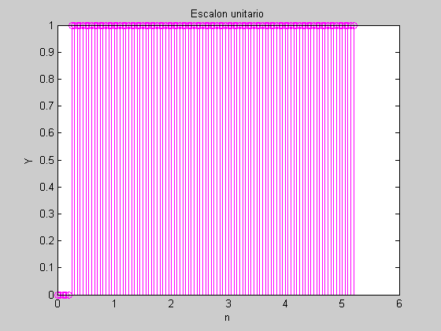
[rampa,tiempor]=Rampa_Unitaria(100,20);
figure
stem(tiempor,rampa,'r')
title('Rampa unitaria')
xlabel('n')
ylabel('Y')
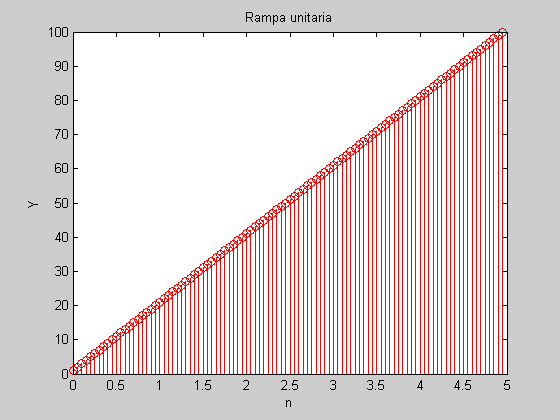
clear all
Ejercicio 2
[diente,tiempod]=Diente_Serrucho(100,20000,13,7);
figure
stem(tiempod,diente,'c')
title('Diente de serrucho')
xlabel('n')
ylabel('Y')
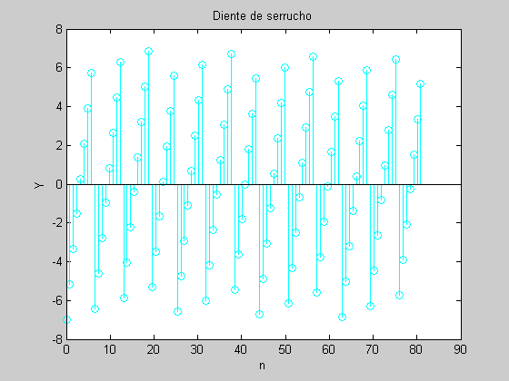
[cuadrada,tiempoc]=Cuadrada(100,20000,13,7);
figure
stem(tiempoc,cuadrada,'m')
title('Cuadrada')
xlabel('n')
ylabel('Y')
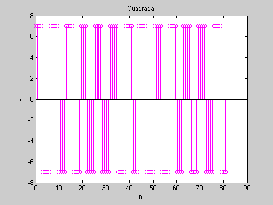
clear all
Ejercicio 3
[sen1,n1]=Senoidal_Discreta(0,25,3,pi/17,0);
figure
stem(n1,sen1)
title('Senoidal discreta 1')
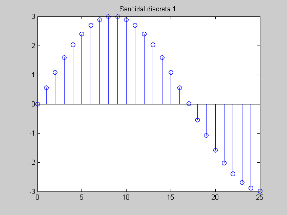
[sen2,n2]=Senoidal_Discreta(-15,25,3,pi/17,0);
figure
stem(n2,sen2)
title('Senoidal discreta 2')
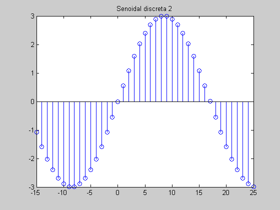
[sen3,n3]=Senoidal_Discreta(-10,10,5,3*pi,pi/2);
figure
stem(n3,sen3)
title('Senoidal discreta 3')
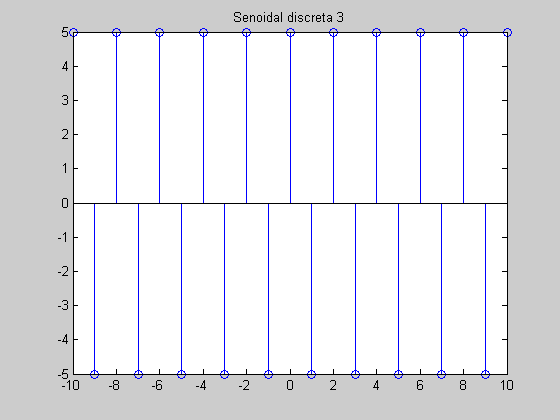
[sen4,n4]=Senoidal_Discreta(0,50,1,pi/sqrt(23),pi);
figure
stem(n4,sen4)
title('Senoidal discreta 4')
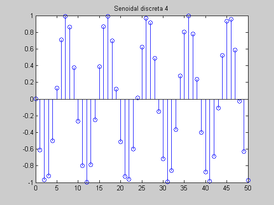
clear all
Ejercicio 4
Senoidal_Continua(100,4,5,0,0,10);
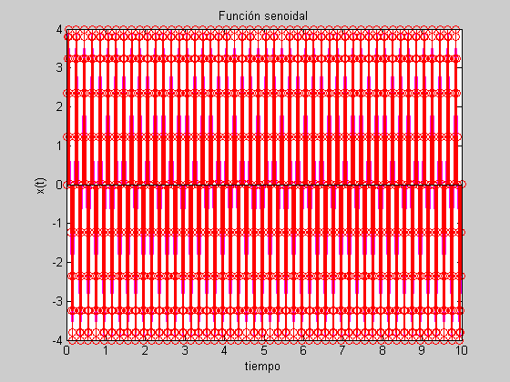
Senoidal_Continua(100,4,2.25,0,0,10);
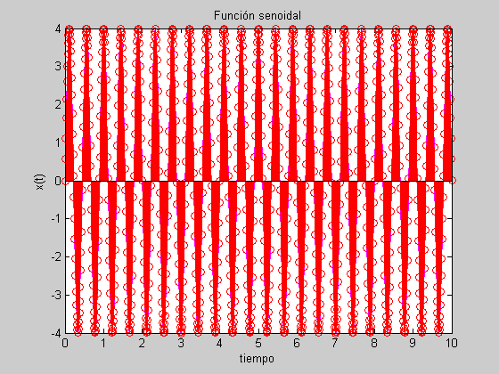
Senoidal_Continua(100,4,1,0,0,10);
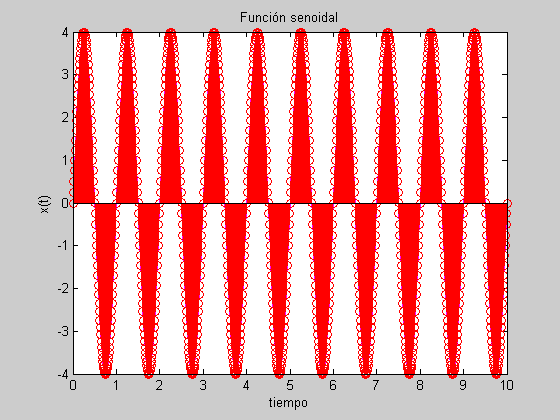
Senoidal_Continua(100,10,1/6,0,0,10);
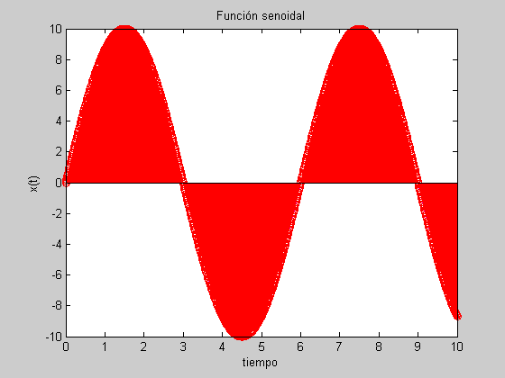
clear all
Ejercicio 6
A = IMREAD('6a1.jpg');
figure;IMSHOW(A)
Warning: Could not find an exact (case-sensitive) match for 'IMREAD'.
C:\Program Files\MATLAB\R2008b\toolbox\matlab\imagesci\imread.m is a case-insensitive match and will be used instead.
You can improve the performance of your code by using exact
name matches and we therefore recommend that you update your
usage accordingly. Alternatively, you can disable this warning using
warning('off','MATLAB:dispatcher:InexactCaseMatch').
This warning will become an error in future releases.
Warning: Could not find an exact (case-sensitive) match for 'IMSHOW'.
C:\Program Files\MATLAB\R2008b\toolbox\images\imuitools\imshow.m is a case-insensitive match and will be used instead.
You can improve the performance of your code by using exact
name matches and we therefore recommend that you update your
usage accordingly. Alternatively, you can disable this warning using
warning('off','MATLAB:dispatcher:InexactCaseMatch').
This warning will become an error in future releases.
Warning: Image is too big to fit on screen; displaying at 17%
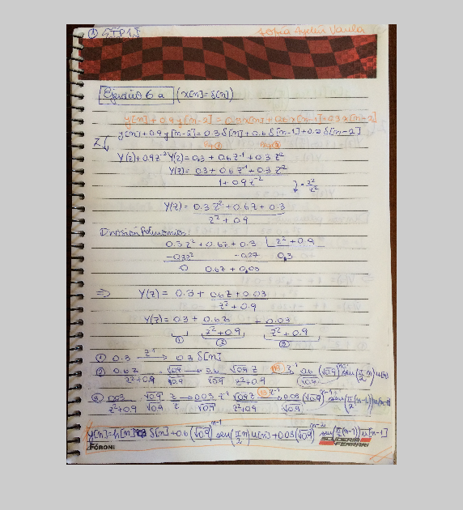
B = IMREAD('6a2.jpg');
figure;IMSHOW(B)
Warning: Image is too big to fit on screen; displaying at 17%
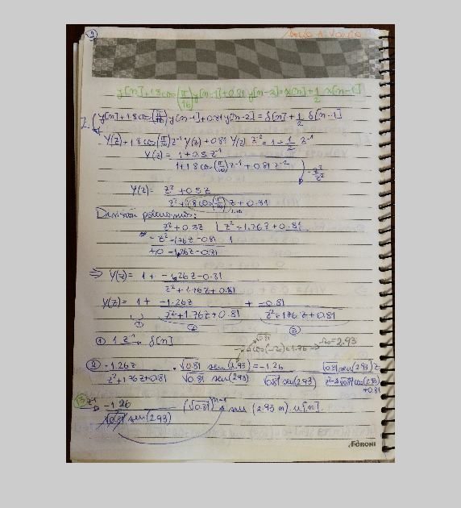
C = IMREAD('6a3.jpg');
figure;IMSHOW(C)
Warning: Image is too big to fit on screen; displaying at 17%
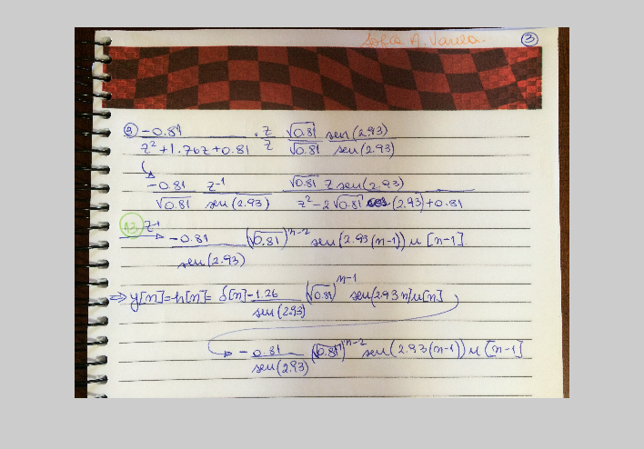
D1=[1,0,0.9];
P1=[0.3,0.6,0.3];
X1=zeros(1,128);
X1(1)=1;
Y1f=filter(P1,D1,X1);
Y1c=conv(X1,Y1f);
D2=[1,1.8*cos(pi/16),0.81];
P2=[1,0.5,0];
X2=zeros(1,128);
X2(1)=1;
Y2f=filter(P2,D2,X2);
Y2c=conv(X2,Y2f);
figure
stem(Y1f,'m');
title('Respuesta al impulso h[n]');
xlabel('n');
ylabel('h[n]');
hold on
stem(Y1c,':','c');
hold off
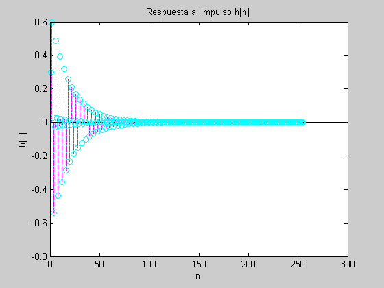
figure
stem(Y2f,'m');
title('Respuesta al impulso h[n]');
xlabel('n');
ylabel('h[n]');
hold on
stem(Y2c,':','c');
hold off
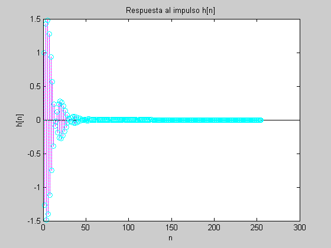
clear all
Ejercicio 8
[y_am,tiempo_am]=Amplitud_Modulada(512,10,5,1,1/200,1/20);
figure
subplot(2,3,1)
plot(tiempo_am,y_am,'g')
title('Amplitud Modulada')
xlabel('Tiempo')
ylabel('Y')
[y_fm,tiempo_fm]=Frecuencia_Modulada(512,10,5,1,1/200,1/20);
subplot(2,3,2)
plot(tiempo_fm,y_fm,'b')
title('Frecuencia Modulada')
xlabel('Tiempo')
ylabel('Y')
[y_sinc,tiempo_sinc]=Funcion_Sampling_Sinc(512,1,1/50,200);
subplot(2,3,3)
plot(tiempo_sinc,y_sinc,'r')
title('Función Sampling (Sinc)')
xlabel('Tiempo')
ylabel('Y')
[y_amort,tiempo_amort]=Amortiguada(512,1,1/100,10,1/300);
subplot(2,3,4)
plot(tiempo_amort,y_amort,'m')
title('Amortiguada')
xlabel('Tiempo')
ylabel('Y')
[y_pulso,tiempo_pulso]=Pulso(128,1,10,4);
subplot(2,3,5)
plot(tiempo_pulso,y_pulso,'c')
title('Pulso')
xlabel('Tiempo')
ylabel('Y')
[y_exp,tiempo_exp]=Exponencial(512,1,10,1/300,4);
subplot(2,3,6)
plot(tiempo_exp,y_exp,'b')
title('Exponencial')
xlabel('Tiempo')
ylabel('Y')
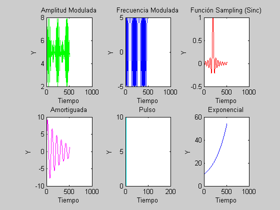
clear all
Ejercicio 10
[x,ti]=Escalon_Unitario(6,1,0);
[h,to]=Escalon_Unitario(3,1,5);
C=conv(x,h);
figure
subplot(2,1,1)
stem(C,'m')
title('Función CONV')
xlabel('n')
ylabel('y')
[y,M]=Convolucion_Discreta(x,h);
subplot(2,1,2)
stem(y,'c')
title('Función CONVOLUCION-DISCRETA')
xlabel('n')
ylabel('y')
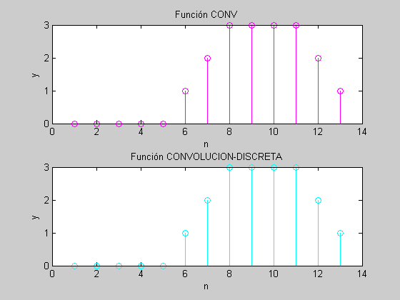
clear all
Ejercicio 11
yaudio=wavread('graciastotales.wav');
y=yaudio(:,1);
y=y';
y1=round((y+1)./2);
figure
subplot(2,1,1)
plot(y1(1:5000),'r')
title('Vector normalizado -1 bit-')
xlabel('Tiempo')
ylabel('y')
y1out=(y1.*2)-1;
subplot(2,1,2)
plot(y1out(1:5000),'b')
title('Vector de salida -1 bit-')
xlabel('Tiempo')
ylabel('y')
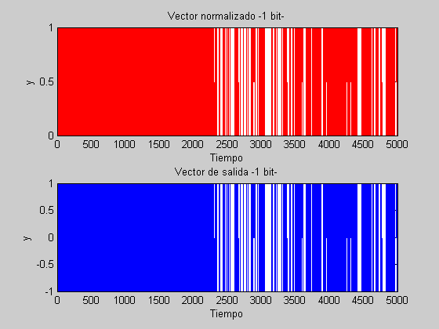
sound(y1out,44100);
y2=round(((y+1)./2)*3);
figure
subplot(2,1,1)
plot(y2(1:5000),'r')
title('Vector normalizado -2 bits-')
xlabel('Tiempo')
ylabel('y')
y2out=((y2/3).*2)-1;
subplot(2,1,2)
plot(y2out(1:5000),'b')
title('Vector de salida -2 bits-')
xlabel('Tiempo')
ylabel('y')
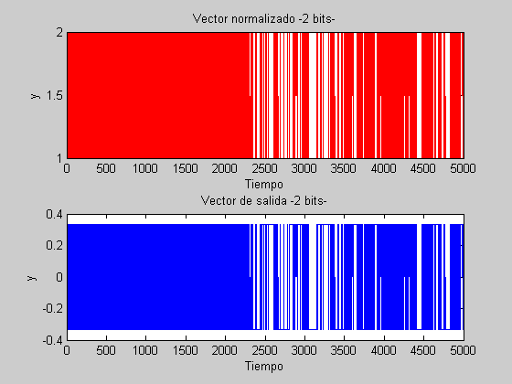
sound(y2out,44100);
y4=round(((y+1)./2)*15);
figure
subplot(2,1,1)
plot(y4(1:5000),'r')
title('Vector normalizado -4 bits-')
xlabel('Tiempo')
ylabel('y')
y4out=((y2/15).*2)-1;
subplot(2,1,2)
plot(y4out(1:5000),'b')
title('Vector de salida -4 bits-')
xlabel('Tiempo')
ylabel('y')
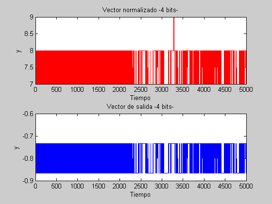
sound(y4out,44100);
y8=round(((y+1)./2)*255);
figure
subplot(2,1,1)
plot(y8(1:5000),'r')
title('Vector normalizado -8 bits-')
xlabel('Tiempo')
ylabel('y')
y8out=((y8/255).*2)-1;
subplot(2,1,2)
plot(y8out(1:5000),'b')
title('Vector de salida -8 bits-')
xlabel('Tiempo')
ylabel('y')
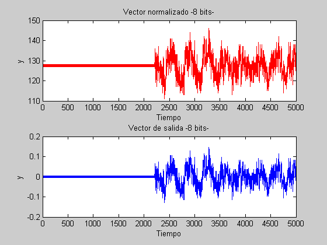
sound(y8out,44100);
clear all